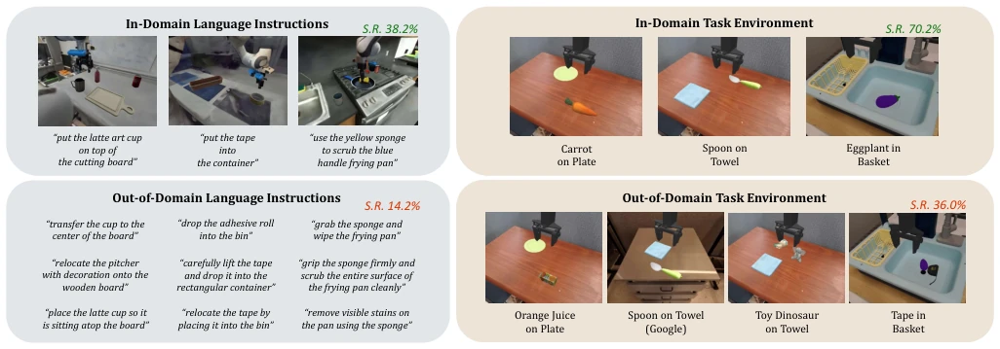
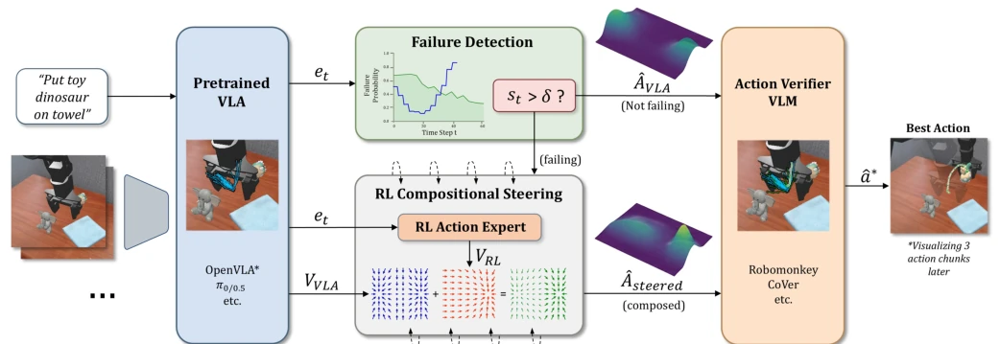
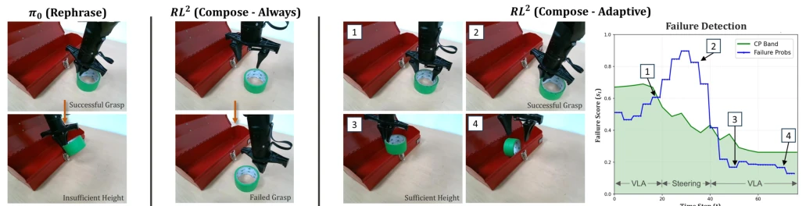
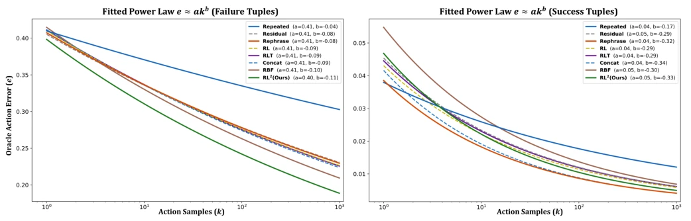
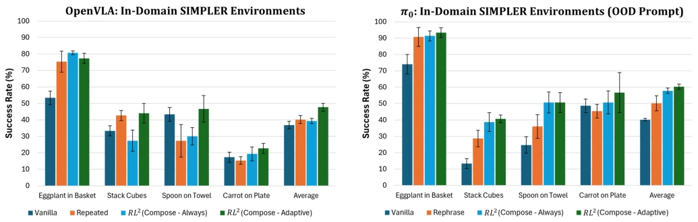
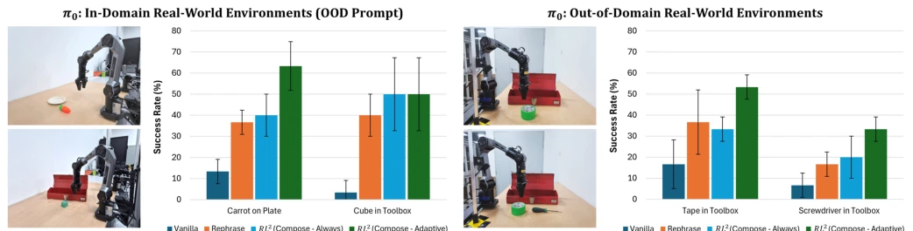
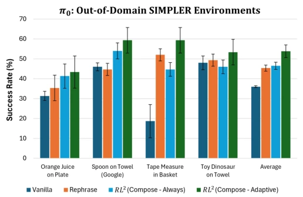
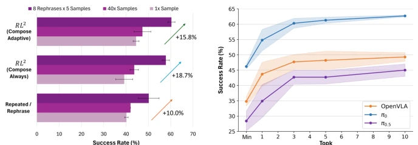
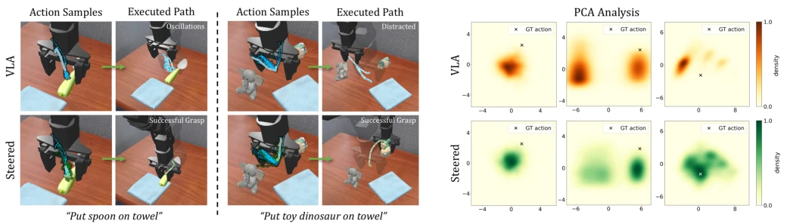
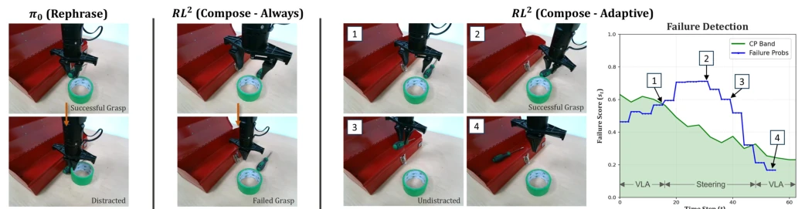

This paper adds a 'proctor' to the VLA's 'exam'. The core lies in discovering a counter-intuitive scaling law: RL is needed to rescue the situation only when VLA is about to fail, whereas interfering when the state is good actually causes harm. The name RL² sounds quite grand, but it is essentially an RL fine-tuner with a switch. It does not touch the base model, but trains a lightweight RL policy to operate in the latent space, leveraging VLA's latent features. The advantage is that the base model does not need retraining; the disadvantage is its reliance on the SAFE detector—if the detector fails, the entire framework collapses. Furthermore, although offline RL training is fast, whether it can truly learn a strategy superior to demonstration data is somewhat metaphysical. However, the experimental data is indeed robust, achieving a 17% improvement under OOD, which helps alleviate VLA's 'overfitting' migraine, but the latency overhead for real-world deployment is not elaborated, leaving a suspense, given the increased computational load during inference.
VLA models perform adequately within the training domain, but collapse in OOD scenarios (such as new instructions, new environments), with success rates dropping from 70% to 36% [1], [2]. Existing inference-time intervention methods (inference-time steering) either suffer from insufficient sampling diversity [12] or rely on imperfect world models [17]. More critically, existing methods apply intervention strategies indiscriminately regardless of whether the current state is a 'sure win' or 'certain loss', causing interference even in successful states. Humans devise more solutions when encountering uncertainty, whereas VLA acts indiscriminately. This paper aims to address the 'when to intervene' problem by discovering scaling laws under different states, achieving adaptive inference-time expansion, avoiding introducing noise during success, thereby enhancing robustness.

Fig. 2. Types of In-domain and OOD Tasks: While VLAs often perform well for in-domain tasks seen during training, their success rates tend to deteriorate when encountering unseen language instructions (left, 38.2% →14.2%) [1] or unseen task environments (right, 70.2% →36.0%) [2]. Recent methods focus on inference-time steering for VLAs to achieve better generalization to these OOD tasks without extensive data collection and expensive retraining.
The overall process proceeds in three steps. First, train a lightweight offline RL policy; it does not learn actions directly, but learns a flow-matching velocity field based on latent features (latents) extracted by the VLA action expert, employing the QAM algorithm to resolve training instability issues, ensuring policy convergence and efficiency. Second, perform 'Compositional Steering' during inference: weight-average the VLA velocity field and the RL policy velocity field to generate more diverse action candidates, preserving priors while increasing diversity, akin to mixed voting. Finally, introduce an adaptive switch: utilize the SAFE failure detector combined with Conformal Prediction (CP) to calculate thresholds, enabling RL intervention only when the predicted failure probability is high, otherwise directly adhering to the VLA original distribution. This design preserves VLA's strong prior while leveraging RL to provide diversity at critical moments, avoiding invalid perturbations, achieving dynamic expansion at test time, and remaining compatible with different VLA architectures.

Fig. 5. RL2 Framework (Flow-Matching VLAs): (i) For flow-matching-based VLAs like π0 [4], given language instructions and observations, RL2 first extracts action expert latents (et) from its frozen VLA action expert. (ii) The latents et is fed into the RL flow-matching steering policy, which provides guidance velocities VRL that are composed with the VLA flow velocities VV LA at each flow-matching step to generate diverse and high-quality action candidates. (iii) In parallel, et is passed into a failure detection module that determines whether steering should be enabled: if failure is detected, RL2 composes the VLA and RL velocities; otherwise, it falls back to the base VLA action distribution. (iv) Finally, a verifier scores the generated candidates and selects the best action to execute

Fig. 3. Real-Robot Experiment for Tape in Toolbox Task (OOD Environment): This task is challenging for the base VLA (π0 [4]) because the tape was never seen during training. (Left) Rephrase correctly grasps the tape but often collides with the side of the toolbox. (Middle) Non-adaptive RL2 inaccurately approaches the tape, as it unnecessarily steers already-accurate VLA action samples. (Right) Adaptive RL2 relies on accurate VLA samples to approach the tape, then steers actions to lift the tape high enough to avoid collision, when failure is preemptively detected via Conformal Prediction (CP) [20].
Tested on SIMPLER and PolaRiS benchmarks, covering In-domain and OOD instructions/environments, including tasks such as Tape in Toolbox. Baselines include Vanilla, Repeated, Rephrase, etc. Results indicate that adaptive RL² achieves the highest success rate improvement of 17.3% under OOD settings, with an average improvement exceeding 10%. Ablation studies demonstrate: 1) Adaptive is superior to constant intervention, validating the scaling law; 2) Using Latents yields significantly better results than using raw observations (+38.8%); 3) The SAFE detector is more accurate than using Verifier directly for triggering. Finally, verification was conducted on the PiperX real robot, showing an average improvement of 17.5%, proving transferability; however, inference latency increases with batch size, requiring a trade-off, with the table showing latency variations under different batches.

Fig. 4. Test-time Scaling Laws (Steering Improves Failure States but Degrades Success States): We observe that the action error between ground truth and predicted VLA actions (π0 [4]) consistently decreases as we scale the number of action samples across different offline RL and baseline steering approaches. Most notably, compositional steering (RL2) and RBF [35] exhibit the best scaling property due to their ability to generate diverse yet high-quality action samples during failure. However, they perform poorly compared to baseline approaches during success states, prompting the need to apply steering adaptively.

Fig. 7. SIMPLER OOD Prompt Evaluation: Using π0 [4], adaptive RL2 improves robustness under OOD language instructions [1], achieving up to +14.7% in task-wise success rate (average +10.1%) over Rephrase baseline.

Fig. 13. Results of our Real-Robot Experiments: We curate two in-domain and two challenging OOD task environments to compare RL2 against baseline approaches on-hardware. Adaptive RL2 achieves an average of +17.5% over Rephrase [13] baseline, highlighting its robustness to failure modes present in the base VLA. Similarly, adaptive RL2 achieves an average of +14.2% over non-adaptive RL2, highlighting the importance of steering only during failures.
其他图片Other Figures

Fig. 8. SIMPLER OOD Environment Evaluation: Using π0 [4], adaptive RL2 improves robustness in OOD environments [1], by up to +14.6% in task-wise success rate (average +8.5%) over the strongest Rephrase baseline.

Fig. 9. Scaling Samples and Rephrases: RL2 attains larger performance gain compared to base- lines when scaling both samples and rephrases.

Fig. 12. PCA Heatmap Analysis: We represent VLA actions along its two principal axes via Principal Component Analysis on tuples from BridgeV2 dataset [36]. During failure, RL2 will direct action distribution (green) to be closer to the ground truth action.

Fig. 14. Real-Robot Experiment for Screwdriver in Toolbox Task (OOD Environment): This task is challenging for the base VLA (π0 [4]) because the screwdriver was never seen during training and the scene includes a tape distractor. (Left) Rephrase correctly grasps the screwdriver but mistakenly carries the screwdriver to the tape instead of into the box. (Middle) Non-adaptive RL2 inaccurately approaches the screwdriver, as it unnecessarily steers already-accurate VLA action samples. (Right) Adaptive RL2 relies on accurate VLA samples to approach the screwdriver, then performs compositional steering to guide the samples away from the distractor object and towards the toolbox, when failure is preemptively detected via Conformal Prediction (CP) [20].